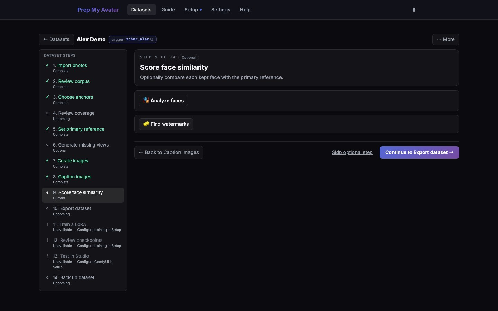

First run · 16 of 21
Step 16: Score face similarity
Face scoring is an optional review aid for Character datasets. It compares each kept face with the reference and shows which images deserve closer inspection. A score is not permission to keep or delete an image automatically.

Before you begin
This page applies only when Face-similarity scoring was installed during Setup and a suitable reference photo is set. Skip it for Concept or Style datasets.
Do this
- Open Score face similarity in the dataset step navigator. Its URL ends in
/scoreand it is labelled Optional. - Select Analyze faces.
- Wait for every kept image to receive a result. ComfyUI may pause while this local analysis uses the GPU or CPU.
- Review low or orange results at full size. Check whether the face is actually wrong, obscured, too small, or simply seen from a difficult angle.
- Reject an off-identity image manually. Keep a useful image when your own inspection shows the score is misleading.
- Review sharpness and exposure warnings separately; identity and technical quality are different questions.
- Select Continue to Export dataset, or Skip optional step when scoring is not installed or not useful for this set.
You are finished when
Every kept Character image you intended to score has a result and every suspicious result has been reviewed, or you deliberately skipped scoring. Concept and Style navigators omit this page.